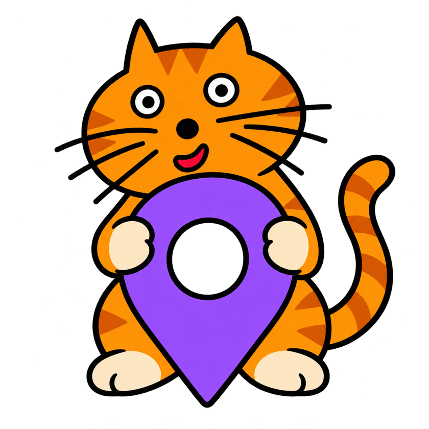

Street Meowmi is being prepared for its first App Store release.
SUPPORT
A little help for
your cat journal.
Questions about Street Meowmi? We’re here to help you keep track of the cats you meet.
Email support
Where is my collection stored?
New photos and encounter records are saved on your device. Your collection is personal and is not published to other users.
How do I protect my collection?
Use the backup export and restore options in the app’s Settings. Save the exported ZIP somewhere safe before resetting or replacing your phone. These files include your photos and exact encounter locations, so share them carefully.
Does the app need internet access?
Your collection is stored locally. Maps and place-name suggestions may need an internet connection.
Are purchases available?
Purchases are not available in the current general-use build. Pricing and purchase details will be announced when the release is ready.
Can I edit or delete an encounter?
You can manage cats and encounters in the app. Deleting an entry does not remove copies in your photo library or previously exported backups. See the privacy policy for more details.
What should I include when asking for help?
Tell us your iPhone model, iOS version, app version, and what happened. Screenshots can help. Please remove any private locations or personal details, and never send passwords or verification codes.